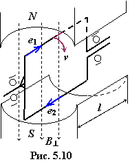
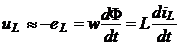

5.2.2.2. Закон электромагнитной индукции Фарадея-Максвелла
Закон электромагнитной индукции Фарадея-Максвелла гласит, что при изменении магнитного поля, связанного с витками катушки, в последней наводится электродвижущая сила (ЭДС) индукции
, (5.6)
где Ψ = Li – потокосцепление индуктивной катушки, Вб; w – число её витков; L = Ψ / i – индуктивность катушки, Гн, которая может быть приближённо определена через геометрические размеры катушки: L ≈ µµ0w2Sмlм, где lм – средняя длина м. с. л., м; Sм – среднее сечение витков катушки, м2.

Другими словами, если перемещать проводник в магнитном поле (то же, что если проводник неподвижен, а магнитный поток Ф изменяется во времени), в нем наводится ЭДС, равная произведению перпендикулярной к проводнику составляющей магнитной индукции длине проводника l и скорости его перемещения v, т.е.
Направление ЭДС (тока) определяется известным правилом правой руки (рис. 5.10): если расположить правую руку так, чтобы м. с. л. входили в ладонь, а отогнутый большой палец указывал направление движения проводника, то остальные выпрямленные пальцы будут показывать направление ЭДС (тока).
Напряжение на зажимах идеальной индуктивной катушки (в которой активным сопротивлением проводов пренебрегают, т.е. R = 0)
уравновешивает ЭДС самоиндукции eL.
Закон электромагнитной индукции лежит в основе функционирования трансформаторов, генераторов электрического тока и других электромагнитных устройств.